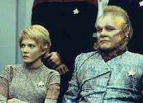
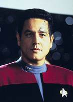
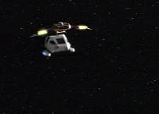
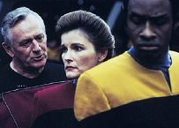

|
MANCHETE
DO EPISDIO
Janeway testemunha a vida aps a
morte e enfrenta entidade maligna
Episdio
anterior | Prximo
episdio
Sinopse:
Data
Estelar: 50518.6.
 Depois
que a nave auxiliar de Chakotay e Janeway cai em um planeta, o
comandante acredita que se trata de um ataque Vidiian. Pouco depois,
um grupo de Vidiians chega e os ataca, matando-os. Subitamente, os
dois esto de volta em sua nave, sob o ataque dos aliengenas.
Antes que os oficiais possam aterrissar, o reator da nave auxiliar
explode. Segundos mais tarde, a dupla est de volta nave. Depois
que a nave auxiliar de Chakotay e Janeway cai em um planeta, o
comandante acredita que se trata de um ataque Vidiian. Pouco depois,
um grupo de Vidiians chega e os ataca, matando-os. Subitamente, os
dois esto de volta em sua nave, sob o ataque dos aliengenas.
Antes que os oficiais possam aterrissar, o reator da nave auxiliar
explode. Segundos mais tarde, a dupla est de volta nave.
Acreditando estarem presos em um loop
temporal, Janeway e Chakotay contatam a Voyager e conseguem escapar
dos Vidiians. Entretanto, quando chegam Ponte, Chakotay refuta as
afirmaes da capit sobre um loop temporal. O Doutor diagnostica
que Janeway est sofrendo da fagia Vidiian e pratica a eutansia
contra a vontade da paciente, depois do que a capit se encontra
novamente na nave auxiliar com Chakotay. medida que se aproximam
de um estranho fenmeno espacial, a nave explode, e tudo o que
Janeway v agora Chakotay tentando ressuscit-la na superfcie
do planeta -- sem sucesso.
 Retornando
Voyager com Chakotay, Janeway descobre que ningum consegue
v-la. Na enfermaria, as tentativas do Doutor de reanimar o seu
corpo falham, mas a capit consegue fazer com que Kes sinta a sua
presena telepaticamente. Enquanto a tripulao cogita a
hiptese de sua capit estar perdida em uma dimenso alternativa,
Janeway fica chocada ao ver seu pai -- morto h mais de quinze
anos. O almirante Janeway conta que ela realmente morreu naquele
acidente com a nave auxiliar e tenta convenc-la a aceitar a morte.
Dias se passam com repetidas tentativas fracassadas de alcanar a
capit, ento a tripulao organiza um servio memorial. Retornando
Voyager com Chakotay, Janeway descobre que ningum consegue
v-la. Na enfermaria, as tentativas do Doutor de reanimar o seu
corpo falham, mas a capit consegue fazer com que Kes sinta a sua
presena telepaticamente. Enquanto a tripulao cogita a
hiptese de sua capit estar perdida em uma dimenso alternativa,
Janeway fica chocada ao ver seu pai -- morto h mais de quinze
anos. O almirante Janeway conta que ela realmente morreu naquele
acidente com a nave auxiliar e tenta convenc-la a aceitar a morte.
Dias se passam com repetidas tentativas fracassadas de alcanar a
capit, ento a tripulao organiza um servio memorial.
 Janeway
diz ao pai que ainda no est pronta para abandonar sua
tripulao. De repente, ela sente que ainda est em seu corpo
fsico, e que o Doutor est tentando salv-la. O almirante diz
que a cena uma alucinao e fala para ela desistir e aceitar a
situao. Janeway sabe que o pai nunca a foraria daquela
maneira, e percebe que ele um aliengena disfarado com a
figura de Edward Janeway. De fato, uma presena aliengena invadiu
o seu crtex cerebral, mas agora que ela est ciente disso,
recupera a conscincia na superfcie do planeta, onde estava sendo
tratada de seus ferimentos com Chakotay.
Comentrios:
Loops temporais, experincias fora
do corpo, habitaes aliengenas, Vidiians, queda de naves
auxiliares, morte, proximidade da morte, show de talentos, e assim
por diante. Esse foi "Coda", o "episdio
espiritual" de Voyager.
 A
princpio, parecia que a histria seria muito parecida com "Cause
and Effect", de A Nova Gerao, centrada em
repetidos loops temporais. Mas logo o telespectador se deu conta que
a maior parte das coisas que via no estavam de fato acontecendo --
era tudo fruto da imaginao da capit. E que imaginao
frtil ela tem. As experincias com a morte, as reaes da
tripulao, quase tudo estava na cabea dela. Na verdade, pode-se
dizer que todos na Voyager estavam agindo como ela gostaria que eles
agissem; aqui s no se encaixa o Doutor, com aquele papo sem p
nem cabea de eutansia e fagia (provavelmente refletindo um medo,
provavelmente inconsciente, da capit de ter uma pea de
tecnologia como mdico, fria e sem emoes). A
princpio, parecia que a histria seria muito parecida com "Cause
and Effect", de A Nova Gerao, centrada em
repetidos loops temporais. Mas logo o telespectador se deu conta que
a maior parte das coisas que via no estavam de fato acontecendo --
era tudo fruto da imaginao da capit. E que imaginao
frtil ela tem. As experincias com a morte, as reaes da
tripulao, quase tudo estava na cabea dela. Na verdade, pode-se
dizer que todos na Voyager estavam agindo como ela gostaria que eles
agissem; aqui s no se encaixa o Doutor, com aquele papo sem p
nem cabea de eutansia e fagia (provavelmente refletindo um medo,
provavelmente inconsciente, da capit de ter uma pea de
tecnologia como mdico, fria e sem emoes).
Uma coisa que fica muito clara
que, ao final, Janeway voltar. Mas o episdio prende a ateno
por levar o telespectador a crer que essa mesmo uma histria de
vida aps a morte. Algumas das idias que foram colocadas so
coerentes com a doutrina esprita.
Mas parece que a verdadeira meta do
segmento incorporar histria oficial de Jornada o
mximo possvel de detalhes apresentados no livro "Mosaic",
de Jeri Taylor. Muito do passado de Janeway que apareceu aqui vem
direto da novela.
 Levando
em conta que muito do que foi visto vem da mente da capit, a
imagem mostrada de Chakotay bastante significativa. O pblico
pde ver uma enorme aproximao entre os dois personagens em "Resolutions",
da temporada anterior --que coincidentemente trazia os Vidiians--, e
aqui fica clara a intimidade entre capit e primeiro-oficial.
Mas aqueles que torcem por um
relacionamento "menos profissional" entre os dois no
devem se animar muito. O estdio ficou muito preocupado com essa
aproximao, garantindo que na srie sempre pairasse um ar de
dvida. O motivo desse temor que muitas sries de TV em que os
personagens principais se envolveram romanticamente sofreram graves
quedas nos ndices de audincia.
Particularmente, uma relao entre
os dois no comprometeria a qualidade de Voyager --pelo
contrrio, talvez at a elevasse-- j que isso representaria um
diferencial em Jornada, um frescor na forma de contar
histrias (algo que Jeri Taylor deixou mais do que claro como meta
para a temporada). Isso remete a uma questo importantssima, que
pouco (ou nada) trabalhada na srie; a postura dos personagens
com relao a relacionamentos.
 Janeway
e cia. nunca se comportam como se estivessem enfrentando uma viagem
de pelo menos 70 anos. Em "Elogium",
do primeiro ano, rola o papo de uma nave-comunidade, em que os
tripulantes se preocupariam em ter filhos para garantir a
continuidade da jornada para casa. Tendo esse senso de realidade em
mente, por que a tripulao continua sempre to formal? Por que a
Voyager ainda tem esse visual de nave militar, e no de um lar? Por
que no h casais a bordo? E por que capit e primeiro-oficial
no podem se aproximar -- o que seria uma decorrncia lgica,
dadas as circunstncias?
Enfim, voltando ao episdio, as
cenas de Chakotay no planeta mexeram com a emoo do pblico. Foi
uma das melhores atuaes de Robert Beltran na srie. O que vem a
seguir pode gerar controvrsia, mas foi tambm uma das poucas
vezes em que Chakotay agiu legitimamente como primeiro-oficial.
 Ainda
sobre a carga emocional da histria, a seqncia do memorial
tambm foi bem montada. No muito pelos tripulantes, de quem se
esperava ao menos umas poucas lgrimas (e menos pataquada de Harry
Kim). Mas mais por Janeway, to brilhantemente interpretada por
Kate Mulgrew. de se surpreender a objetividade de todos na forma
de lidar com a morte de Janeway, que at ento para todos no era
s a oficial comandante, mas uma me confortadora. No mnimo,
esperava-se que Kes, Neelix e Kim chorassem rios. nessa falta de
realismo que Voyager peca. Os personagens mais parecem
soldados treinados --ou um bando de Vulcanos-- do que os nicos 150
humanos l fora.
Um episdio um tanto confuso e com
algumas limitaes. Mas "Coda" vale pela tima
atuao dos protagonistas. sempre bom ver Kathryn Janeway ser
trabalhada pelos roteiristas, e uma raridade ver Chakotay em foco.
Citaes:
Janeway - "Our secret, Neelix."
(" o nosso segredo, Neelix.")
Neelix - "We never had this discussion."
("Ns nunca tivemos essa discusso.")
Janeway - "Maybe I could
stand with an apple on my head and you could phaser it off."
("Talvez eu pudesse ficar com uma ma na cabea para
voc atirar com feiser.")
Chakotay - "Sounds great! If I miss, I get to be Captain."
(Parece timo! Se eu errar, viro o capito.")
Janeway - "That's more like
it."
("Assim est melhor.")
Janeway - "Tuvok, surely you
must know I'm here. We've shared so much."
("Tuvok, certamente voc deve saber que eu estou aqui. Ns
dividimos tanta coisa.")
Janeway - "This can't be
happening. I can't believe it."
("Isto no pode estar acontecendo. Eu no acredito.")
Aliengena - "You're in a
dangerous profession, Captain. You face death everyday. There'll be
another time, and I'll be waiting."
("Sua profisso perigosa, capit. Voc enfrenta a
morte todos os dias. Haver outra vez e eu estarei
esperando.")
Janeway - "Go back to hell,
coward."
("Volte para o inferno, seu covarde.")
Trivia:
 No episdio, o almirante Janeway chama Kathryn de "minha
avezinha". A expresso uma referncia ao livro escrito por
Jeri Taylor ambientado na srie, "Mosaic", que conta o
passado da capit. um dos raros casos em que a literatura de Jornada
influencia algum episdio. Tambm, com Taylor sendo co-criadora,
produtora-executiva da srie e escritora do episdio em questo,
fica mais fcil.
No episdio, o almirante Janeway chama Kathryn de "minha
avezinha". A expresso uma referncia ao livro escrito por
Jeri Taylor ambientado na srie, "Mosaic", que conta o
passado da capit. um dos raros casos em que a literatura de Jornada
influencia algum episdio. Tambm, com Taylor sendo co-criadora,
produtora-executiva da srie e escritora do episdio em questo,
fica mais fcil.
Quem gosta de contar perdas de nave auxiliar na srie vai se
divertir com "Coda". Durante o episdio, a nave
Sacajawea destruda diversas vezes. Claro, o famoso 'boto
reset' vai apagar todos esses impactos da existncia at o fim do
episdio...
Esta
a sexta apario dos Vidiians na srie; eles no eram
mostrados desde Resolutions,
da temporada anterior, e s retornaro para "Fury"
(sexto ano), episdio no mnimo controverso.
Aqui fica estabelecido que o pai de Kathryn, o almirante Edward
Janeway morreu h mais de quinze anos.
Ficha
tcnica:
Escrito
por
Jeri
Taylor
Dirigido por Nancy Malone
Exibido em 29/01/1997
Produo: 058
Elenco:
Kate Mulgrew como
Kathryn Janeway
Robert Beltran como Chakotay
Roxann Biggs-Dawson como B'Elanna Torres
Robert Duncan McNeill como Tom Paris
Jennifer Lien como Kes
Ethan Phillips como Neelix
Robert Picardo como Doutor
Tim Russ como Tuvok
Garrett Wang como Harry Kim
Elenco convidado:
Len Cariou como almirante Edward Janeway
Majel Barrett-Roddenberry como a voz do computador
Episdio
anterior | Prximo
episdio
|